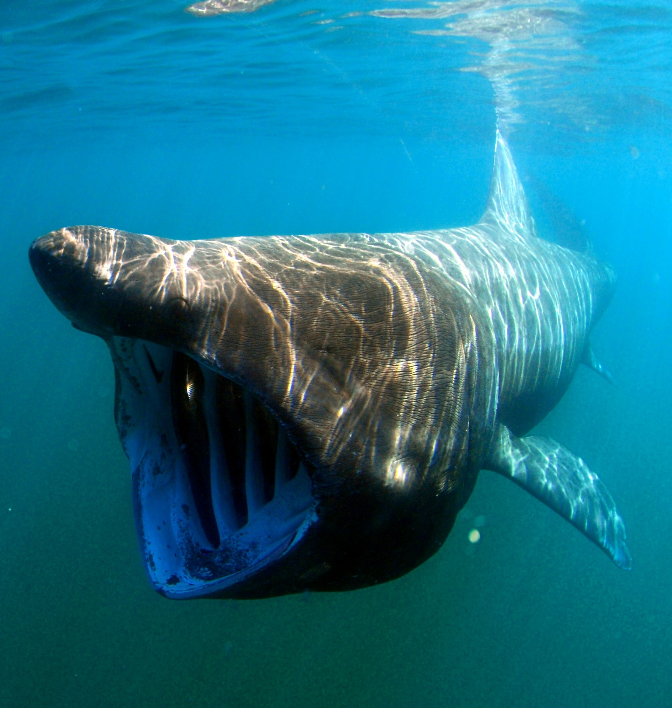

There are many fascinating aspects of the shark species to know. Lets take a look at these interesting facts:
The largest shark, the Whale Shark, can grow up to 61 feet long!
The Basking shark, the second largest shark, has the biggest jaw at 3 feet wide!

The Cookiecutter shark's mouth has suction and creates a "cookie" shaped bite out of what it attached to. This fish's goes out of its way to bite
from dolphins to submarines!
The Oceanic Whitetip shark is responsible for attacking many shipwrecks. While it's considered to have one of the highest
kill counts of any shark, many of the attacks are unrecorded.
The smallest shark is the Dwarf lanternshark, smaller than a human hand at 7 inches.
There has been much debate on what is the largest great white shark recorded. Up until the internet and better technology,
newspaper articles and claims were all people had to go on. Going as far back as the 1870s, there have been claims of white sharks
reaching from 21 feet to a whopping 37 feet long! Much of these claims are criticized for the legitimacy and scientific accuracy of
these claims, many of which are considered overblown.
The Thresher shark uses its very long tail as a weapon to stun prey.
The Shortfin Mako, the fastest shark, can swim up to 31 mph!